Modernize & Optimize Scientific Software
I take large, difficult codebases (Fortran, C/C++, Python, mixed stacks) and turn them into fast, reliable, maintainable systems.
Ideally start with a free audit, followed by fast-paced fixed scope contracts, followed by a longer term retainer.
I always start with a short, fixed audit of your existing system and meetings to discuss potential upgrades or development of new software.
Fast paced, fixed-scope engagements to upgrade, optimize, fix bugs, build something new, etc.. Usually budgeted as a fixed price based on value
Lightweight retainers for teams that need continued architectural or maintenance oversight without full-time involvement. These can be long term (years) if wanted.
In limited cases, I'm open to B2B partnerships or shared-IP arrangements where the problem is well-defined, high-impact, and aligns with my interests.
In progress, building a commercial grade interactive UI/UX for a hypersonic adaptive mesh solver. Features planned include editing models, boundary conditions, command bus architecture, save/load scenes, manage batch processes.
An end-to-end platform for non-coding RNA analysis, starting from raw sequencing data and extending through downstream analysis, annotation, and interpretation in colaboration with Kansas University graduate students. The system ingests FASTQ files and runs reproducible, containerized pipelines for quality control, alignment, quantification, and statistical analysis. It supports multiple ncRNA classes and integrates differential expression workflows across experiments, conditions, and replicates.
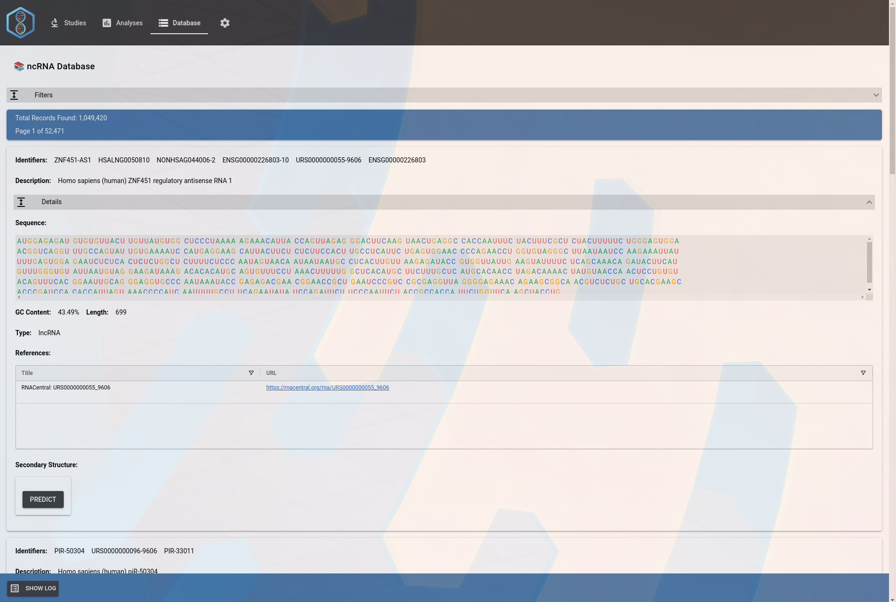
CAPARS is a large-scale atmospheric dispersion modeling system used to develop Emergency Action Levels (EALs) and Protective Action Guidelines (PAGs) in response to simulated chemical and radiological release scenarios. The system was originally developed in the 1990s by multiple engineers. I later took full ownership of the codebase and infrastructure, upgrading, customizing, and deploying CAPARS in a highly secure environment at Sandia National Laboratories.
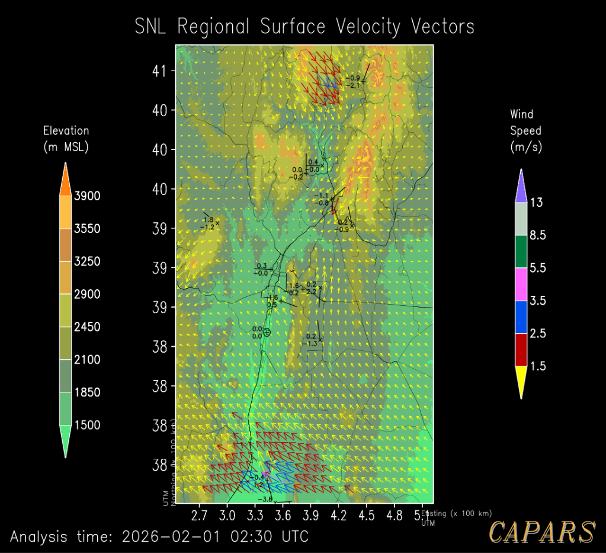
I founded and solo developed a developer–company matchmaking platform built with Next.js, React, and PostgreSQL. The platform is centered around a structured, skill-based resume that captures detailed and nuanced developer capabilities. Developers are awarded specialty badges at different proficiency levels based on completed courses, demonstrated projects, and verified work experience.
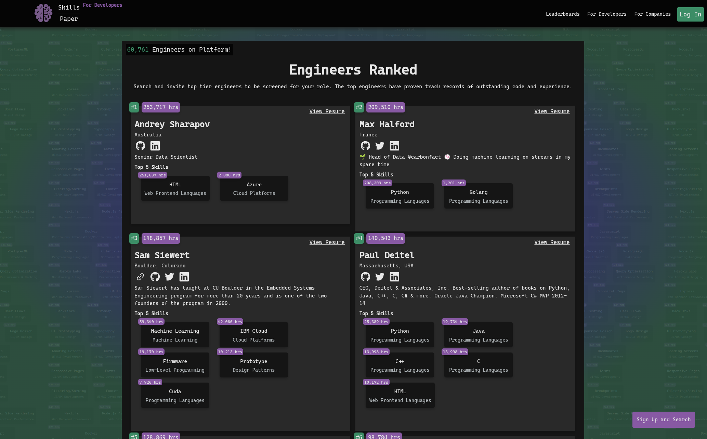
This was a short-term contract with Activated Research Company LLC. I worked on an Electron-based application deployed on Raspberry Pi devices, interfacing directly with PID controllers, sensors, and actuators. The system was managed and deployed using Balena OS for fleet management and remote updates. I diagnosed and fixed a long-standing socket communication bug that had caused persistent reliability issues in production, resolving a problem that had remained unsolved for several months.
This project was delivered under an aggressive two-week timeline, compressing several months of planned work. I designed and built an interactive cognitive assessment application based on standard cognition and Alzheimer’s screening tests, implemented as a React-based UI/UX. The application was integrated into the client’s internal web services and workflows. The result was a production-ready, interactive dementia screening tool delivered on a highly accelerated schedule for a health insurance company.
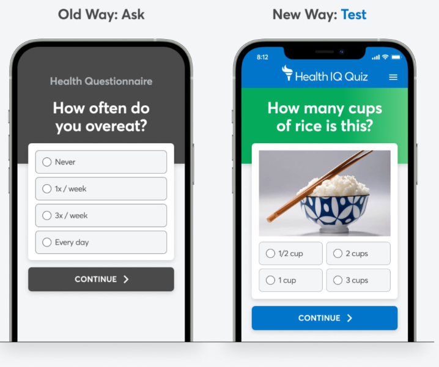
BrainBrake was a 3D game built from scratch in Unity. I designed and implemented a minimalist gameplay loop in which a rotating glass cube continuously spins while the player throws balls to break glass panels of specific colors. As the game progresses, the ball’s rotation speed increases, gradually raising the challenge and intensity. The game was intentionally designed as a calming, focus-driven experience, aimed at reducing anxiety and overthinking through repetitive, visually engaging interaction.
I’ve worked with the original creator of AlphaACT since 2018, serving as the primary developer responsible for maintaining, upgrading, and customizing the platform for multiple clients. AlphaACT is a psychology-based training system designed to help emergency response professionals perform accurately under pressure by simulating a wide range of high-stress emergency scenarios. The platform is used across multiple industries and relies on realistic scenario modeling to build decision-making resilience and situational awareness.
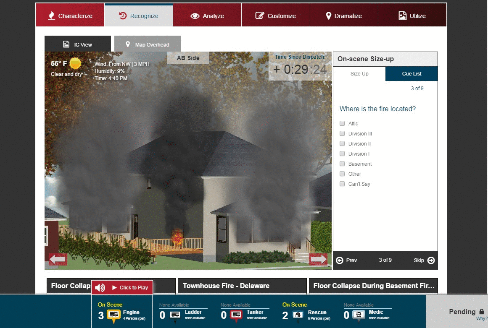
This was a longer-term freelance engagement working within a Scrum team of experienced engineers at iGrad. I contributed across the stack, including designing and implementing APIs, integrating machine learning–driven features, and building complex, responsive React frontends. My work included developing core web application components, implementing shared systems used across the platform, and migrating existing functionality from Angular to React/Redux.
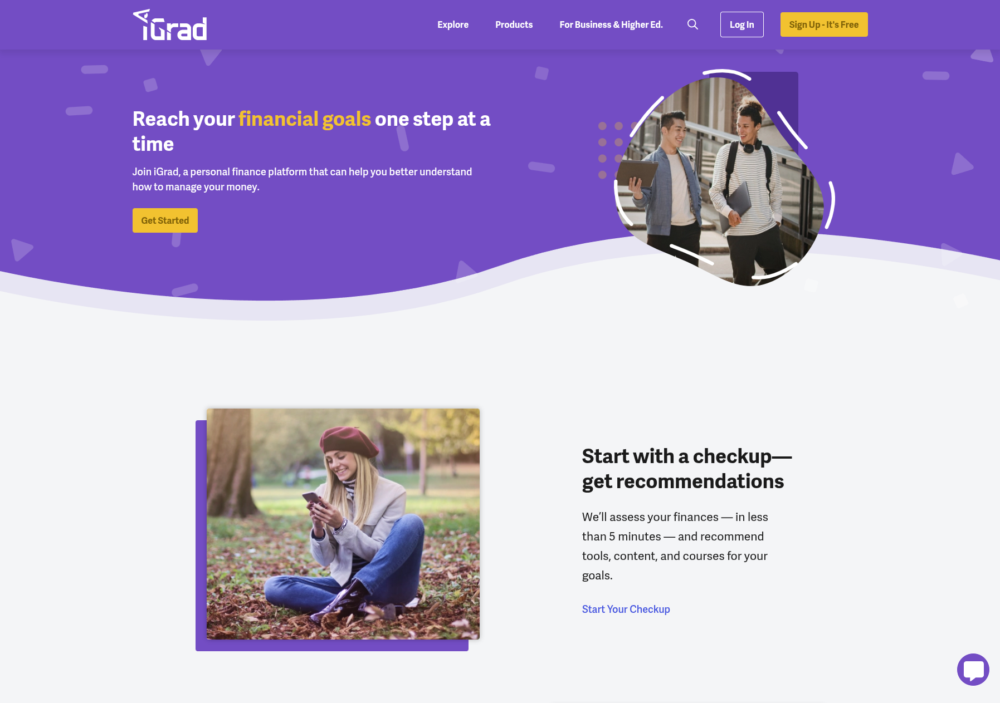
This was a freelance engagement involving multiple game development projects. I worked from existing JavaScript-based game prototypes and mockups and extended them into fully playable casino-style games. This included implementing complete game logic, refining UI/UX, and customizing mechanics to support multiple variants. Deliverables included fully functional implementations of games such as Baccarat, split-bet roulette, and double-ball roulette..
I worked at Dorger Software Architects, contributing to the development and maintenance of multiple medium- to large-scale state systems. Across these projects, I built and extended APIs, developed and maintained frontend components, fixed production bugs, and implemented supporting services required to keep complex systems stable and evolving. The work involved navigating existing codebases, improving reliability, and delivering features within the constraints of government-scale software. Notable systems included Mississippi Lands, Mobile Community Corrections software, and other state-level applications. I also built an internal WYSIWYG Change tracking system.
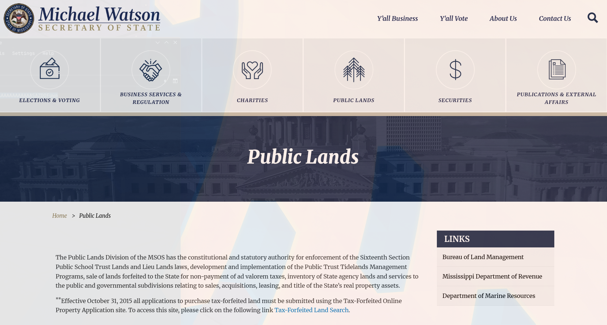
I built an interactive map for viewing historical events across time for a local University.
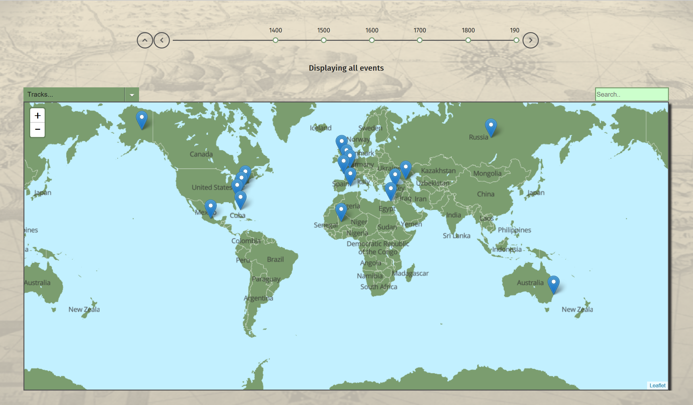
I worked as a Senior Developer on the Centralized Alabama Recipient Eligibility System, a large-scale web platform serving the state of Alabama. I was exposed to a complex ASP.NET web application and associated services, and contributed to core infrastructure development, parts of the automated testing suite, and multiple frontend components. I designed and implemented a visual entity-based UI/UX system for creating dynamic, data-driven forms. During this role, I was promoted to Senior Developer and led several small teams, contributing to planning, technical guidance, and code reviews. I was later assigned to the senior core development group, where I focused on higher-complexity technical problems affecting system performance, scalability, and reliability.
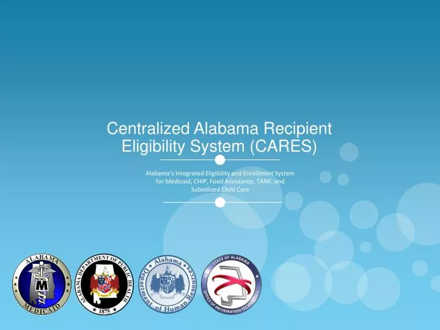
I joined Envista as the company’s first intern after proactively reaching out and negotiating the role. During the internship, I learned C#, WPF, and X++ on the job and worked within a large enterprise ERP codebase. I designed and implemented a data migration tool to transfer large datasets between legacy systems and a modern ERP platform, with a focus on correctness, performance, and reliability. This role provided early exposure to enterprise-scale system design, complex data models, and production software workflows.
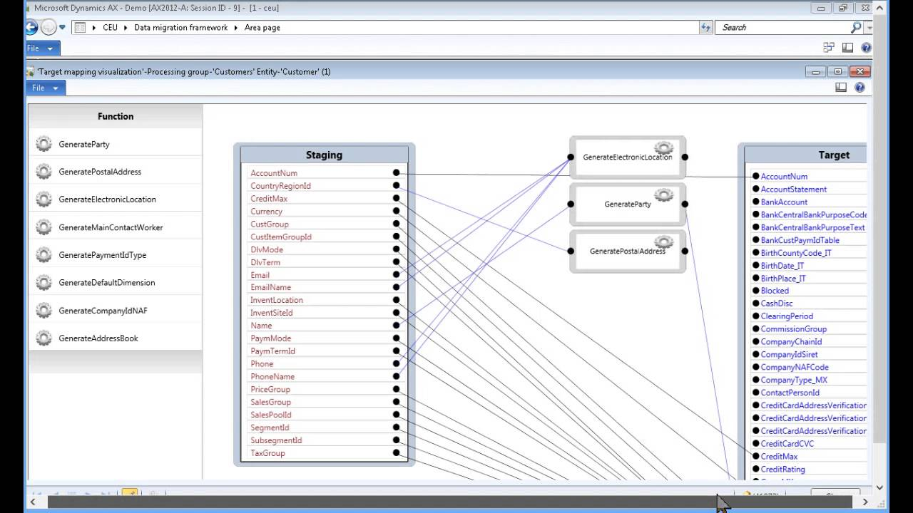
I co-founded and built a damage awards database for legal professionals, designed to help lawyers draw statistical conclusions about potential outcomes in future cases. I built the system from the ground up using ASP.NET Web Forms, including the application architecture, data model, and core business logic. The platform featured a custom database of court cases, multiple analytical pages for exploring case statistics and trends, and a complete pricing and authentication system implemented from scratch. This project provided early experience in full-stack development, data-driven product design, and building a paid web application end to end.
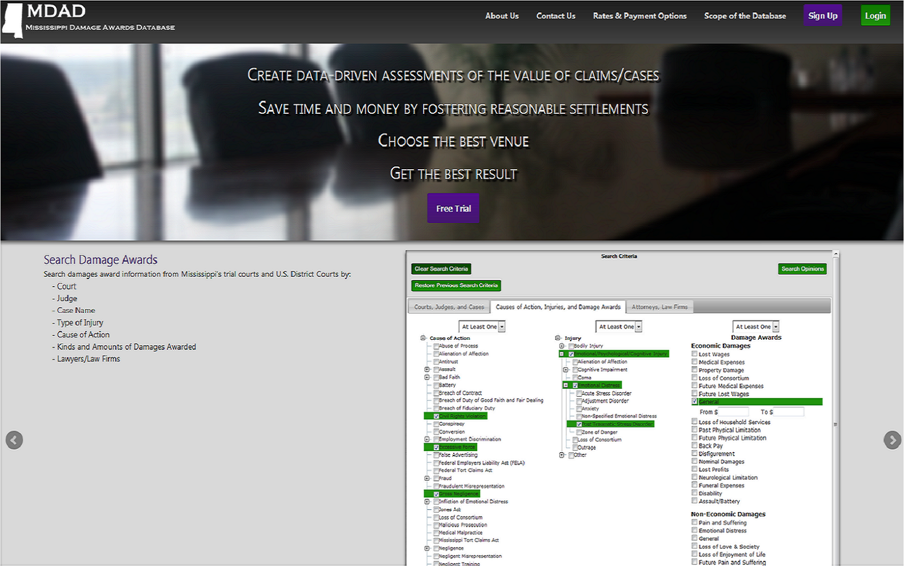